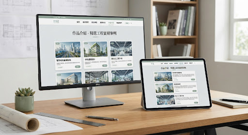
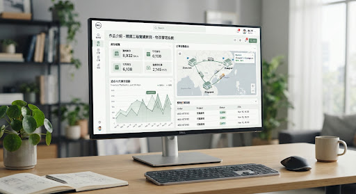
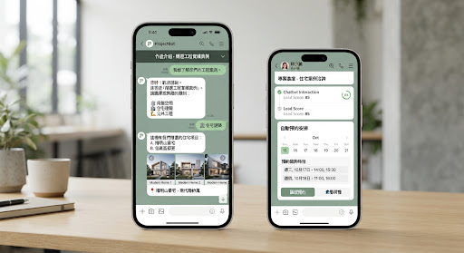
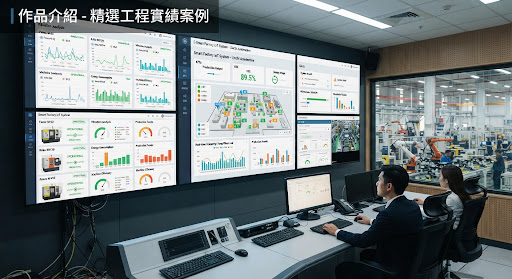

WEB DESIGN · BRAND EXPERIENCE 01 / 品牌網站大型企業數位轉型
大型企業數位轉型
與品牌形象體驗
讓龐大的專案資訊保持清晰，讓服務與品牌故事各有位置。從導覽規劃、響應式介面到後台內容管理，建立能持續成長的網站基礎。
網站架構RWD 設計內容管理
清楚傳達讓複雜資訊更容易被理解
從品牌網站到企業內部系統，以清楚的架構與細膩的使用體驗，解決真實世界的問題。

WEB DESIGN · BRAND EXPERIENCE讓龐大的專案資訊保持清晰，讓服務與品牌故事各有位置。從導覽規劃、響應式介面到後台內容管理，建立能持續成長的網站基礎。

ERP / OPERATION SYSTEM整合訂單、庫存、採購與報表，把分散的工作流程收進同一個介面。讓團隊在日常作業中看得清楚，也做得更有效率。

LINE AI / AUTOMATION將常見問題、預約、通知與資料查詢串進熟悉的 LINE 對話。讓回覆更即時，也讓團隊把時間留給真正需要人處理的事情。

DATA / IOT DASHBOARD把既有系統、設備與資料來源接進同一個視野。以簡潔的圖表與狀態提示呈現關鍵資訊，協助團隊及早發現問題。